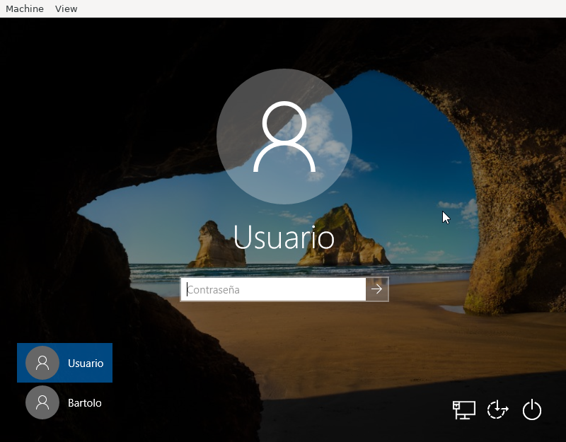

10.1.2.6. Ejercicios sobre uso de windows 10¶
Se desea instalar un Windows 10 de 64 bits* sobre una máquina virtual de Virtualbox.
Cree una máquina virtual con las siguientes características:
- 2 GiB de memoria RAM.
- 2 procesadores.
- Una tarjeta de red paravirtualizada que reciba su configuración del mismo servidor que la tarjeta de la máquina anfitrión.
- Un disco duro de 50GiB.
- Firmware UEFI.
Entregue las capturas de pantalla suficientes para demostrar que ha cumplido con todos los requisitos.
Antes de comenzar la instalación, particione el disco de modo que haya al menos una partición de 25 GiB para el sistema operativo y otra que ocupe la parte sobrante del disco. Recuerde que el disco debe arrancar y necesitará particionea adicionales. Haga una captura de pantalla que demuestre que ha completado esta parte; y además, haga en este punto una exportación de la máquina virtual que no incluya ISOs de instalación/configuración.
Lleve a cabo la instalación de windows. Como usuario cree uno con nombre usuario y contraseña usuario.
Instale el driver de la tarjeta para obtener conexión a la red.
Instala las «Guest Additions», reinicie.
Describa qué es lo que ocurre en la máquina virtual al hacer lo siguiente:
- Intentar copiar y pegar con el ratón.
- Al pulsar Host + Supr.
- Al pulsar Host + E.
- Al pulsar Host + F.
- Al pulsar Host + H.
- Al pulsar Host + P.
- Al pulsar Host + Q.
- Al pulsar Host + R.
- Al pulsar Host + S.
Nota
Host es la tecla derecha de Control. Para entregar la descripción incluya un pequeño documento y expórtelo a PDF.
Una pantalla de acceso a Windows 10, muestra este aspecto:
Se pide:
- Identificar las distintas partes que componen la pantlla.
- Para cada una de ellas:
- Explicar para qué sirve.
- Incluir una captura si al pincar sobre ella se muestra información adicional.
- Deducir cuál es el estado de nuestro propio sistema según la información que recibamos.